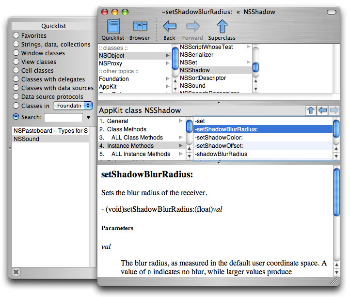
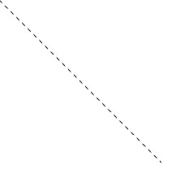
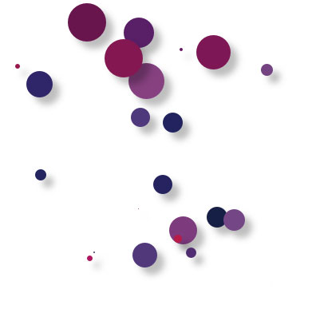

PyObjC
NodeBox is built on PyObjC, a bridge between the Python and Objective-C programming languages. The primary usage of PyObjC is writing Cocoa applications for Mac OS X in pure python. Cocoa is the programming environment on Mac OS X that allows developers to create graphical applications with a typical Apple-look-and-feel.
Cocoa's two main libraries (Foundation Kit and Application Kit) are bundled with NodeBox. If you know a little PyObjC it's easy to start playing around with all the magic in Mac OS X, right from your NodeBox script.
This tutorial contains advanced material.
AppKit manual
The first thing you'll notice about AppKit is that it has a lot of long and odd objects all beginning with NS: NSBezierPath, NSRect, NSImage, and so on (the NS stems from the fact that AppKit is a direct descendant of NeXTSTEP, Steve Jobs' technology that revived Apple).
Commands like layoutManager.drawGlyphsForGlyphRange_atPoint_(glyphRange, (x-dx,y-dy-self.font.defaultLineHeightForFont())) are common. So the first thing to do is get a manual. I recommend using AppKiDo. It requires that you've installed Xcode, the Apple developer tools. Usually you'll find these on the installation CD that came with your Mac.

AppKit rules of thumb
AppKiDo lists all of the objects in their Objective-C form. To use them in Python, a good rule of thumb is to replace the colon with a dash (e.g. setShadowBlurRadius:(float)val becomes setShadowBlurRadius_(floatval) ).
Another good thing to know is that you create AppKit objects with object.alloc() and then initialise them with object.init() or object.initWithARangeOfParamaters().
Also note that some things that are in Foundation like NSSize or NSRect can usually be substituted by simple Python tuples.
To start using AppKit in NodeBox simply import the library:
from Appkit import *
I'll show you some examples of what you can do with AppKit.
Playing sounds in NodeBox
The NSSound object in AppKit provides a very easy way to play AIFF and WAV sound files in Mac applications. The class below is a NodeBox wrapper for NSSound.
from AppKit import NSSound class sound: def __init__(self, file): self._sound = NSSound.alloc() self._sound.initWithContentsOfFile_byReference_(file, True) def play(self): self._sound.play() def stop(self): self._sound.stop() def is_playing(self): return self._sound.isPlaying()
As you can see our sound() command takes a file parameter (that is the location of your sound file) and returns an object with a number of properties:
- sound.play(): start playing the sound
- sound.stop(): stop playing
- sound.is_playing(): returns True when playing
woof = sound("dog.aiff") woof.play()
The following class defines a simple sound mixer/timeline. It has a number of channels that play sounds at a defined time.
from time import time class mixer: def __init__(self, channels=4): self.channels = [[] for i in range(channels)] self.start = time() self.playing = [] def queue(self, channel, time, file): self.channels[channel].append( (time, sound(file)) ) self.channels[channel].sort() def play(self): now = time() - self.start for ch in self.channels: if len(ch) > 0 and ch[0][0] < now: self.playing.append(ch[0][1]) ch[0][1].play() del ch[0] def stop(self): for sound in self.playing: sound.stop() self.playing = [] self.channels = [[] for ch in self.channels]
Queueing multiple sounds is now very easy:
m = mixer(2) m.queue(0, 0.0, "woof.aiff") m.queue(0, 0.4, "woof.aiff") m.queue(0, 0.8, "woof.aiff") m.queue(0, 1.2, "woof.aiff") m.queue(1, 0.4, "meow.aiff") m.queue(1, 1.2, "meow.aiff")
BabbleBox: speech synthesis in NodeBox
The example below wraps the NSSpeechSynthesizer in two NodeBox commands. The voices() command returns a list of all available voices. The say() command makes NodeBox speak out a sentence. The optional voice parameter sets the voice you want to use.
from AppKit import NSSpeechSynthesizer def voices(): voices = NSSpeechSynthesizer.availableVoices() voices = [x.split(".")[-1] for x in voices] return voices def say(txt, voice=None): if voice in voices(): voice = "com.apple.speech.synthesis.voice."+voice else: voice = NSSpeechSynthesizer.defaultVoice() speech = NSSpeechSynthesizer.alloc().initWithVoice_(voice) speech.startSpeakingString_(txt)
Now say hello in a random voice:
say("hello", voice=choice(voices()))
All the fonts on your system
The command below wraps the NSFontManager object. It returns a list with the PostScript name of each font installed on your system. Thanks to Mark for this one.
from AppKit import NSFontManager def fonts(): return NSFontManager.sharedFontManager().availableFonts()
Now you can do lots of fun typography:
background(0.15, 0.1, 0.1) x, y, h = 0, 0, 0 lineheight(1) fontsize(14) for f in fonts()[:250]: font(f) # Random pink, blue or white color fill(random(), random(0.5), 0.75) if random() > 0.8: fill(1) # Wrap text to the next line if x + textwidth(f) > WIDTH: x = 0 y += h h = 0 text(f, x, y) # Line height is equal to biggest font h = max(h, textheight(f)) x += textwidth(f)
Dashed lines
Obviously all of the commands in NodeBox are wrappers to AppKit calls. In most cases you can still manipulate them directly with PyObjC. For example, a BezierPath object has a path property containing the actual NSBezierPath. This we can manipulate to create some custom effects.
def linedash(path, segment=10, gap=5): path.path.setLineDash_count_phase_([segment, gap], 2, 0) return path
p = line(0, 0, 200, 200, draw=False) linedash(p, segment=5) stroke(0) drawpath(p)

Dropshadows in NodeBox
Here I create a wrapper for NSShadow. The result are two commands, shadow() and noshadow() that work like fill() and nofill(): every drawing command defined after shadow() will have a dropshadow until you call noshadow().
Note that the shadow class inherits from something called Grob. This is short for Graphic Object. A Grob executes its _draw() method the moment it is drawn. You need to initialise it with the current context (canvas) to draw in, that's why we pass the global _ctx to Grob.__init__(). The _ctx contains the current context.
This is a typical example of what NodeBox drawing commands look like (also see the source).
from AppKit import NSShadow, NSColor from nodebox.graphics import Grob class shadow(Grob): def __init__(self, x=10, y=10, alpha=0.25, blur=4.0): Grob.__init__(self, _ctx) self._shadow = NSShadow.alloc().init() self._shadow.setShadowOffset_((x, -y)) self._shadow.setShadowColor_(color(0, 0, 0, alpha)._rgb) self._shadow.setShadowBlurRadius_(blur) self.draw() def _draw(self): self._shadow.set() def noshadow(): shadow(alpha=0)
Shadows work very well to create a feeling of depth:
shadow(blur=10.0) for i in range(30): fill(random(0.75), 0, random(0.25,0.75)) r = random(50) oval(random(WIDTH), random(HEIGHT), r, r)
